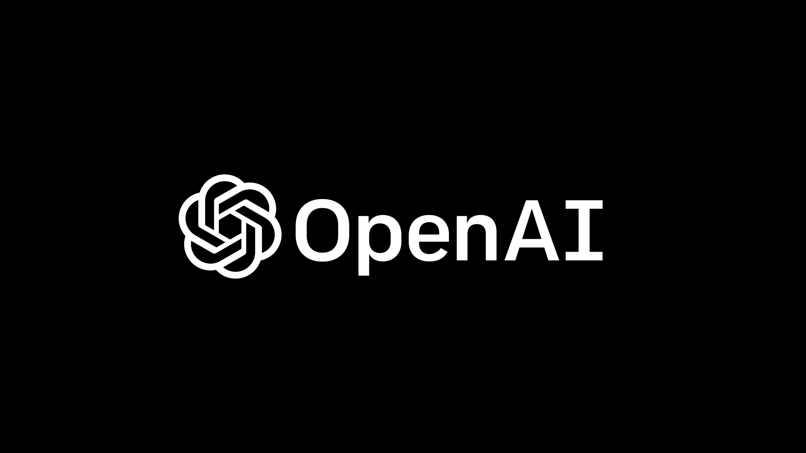
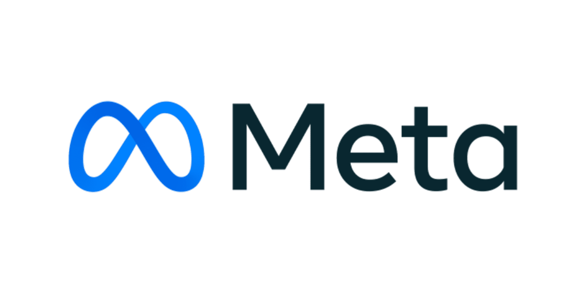

Open IA

Runway es una plataforma innovadora que fusiona arte y tecnología. Es conocida por proporcionar herramientas creativas poderosas que permiten a los artistas visuales y diseñadores explorar nuevas fronteras en la creación digital. Su enfoque revolucionario impulsa la experimentación y la expresión artística en el mundo digital.
Meta

Meta, anteriormente conocida como Facebook, es una empresa líder en tecnología que conecta a personas de todo el mundo. Su visión se centra en construir un metaverso, un espacio virtual compartido, transformando la manera en que las personas interactúan, trabajan y se divierten. Meta impulsa la realidad virtual, la realidad aumentada y la inteligencia artificial para crear experiencias sociales inmersivas.
Runway

OpenAI es una organización de investigación en inteligencia artificial que busca avanzar en la comprensión y aplicación de la IA de manera ética y segura. Reconocida por desarrollar modelos de lenguaje avanzados como GPT-3, OpenAI trabaja en la vanguardia de la inteligencia artificial, promoviendo la investigación abierta y colaborativa para beneficiar a la sociedad.